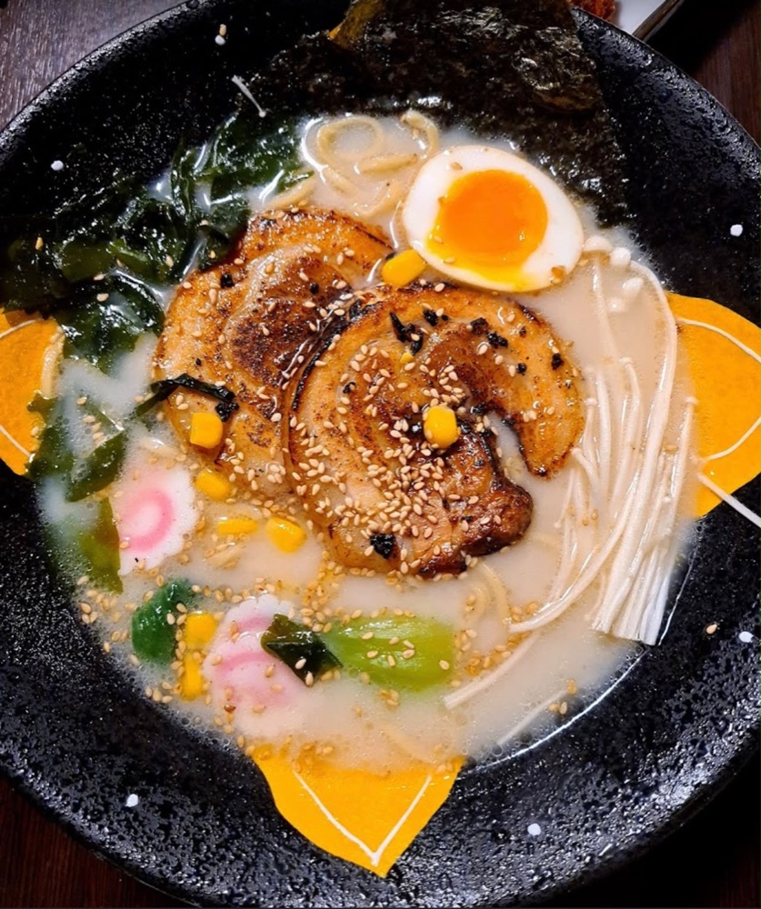
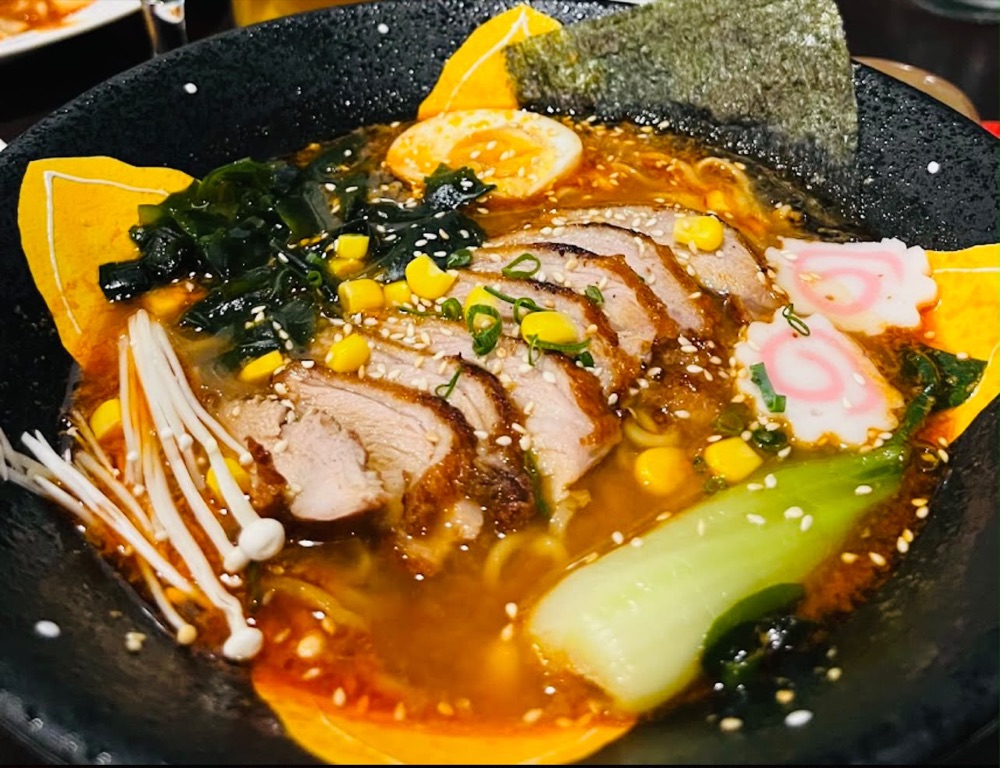
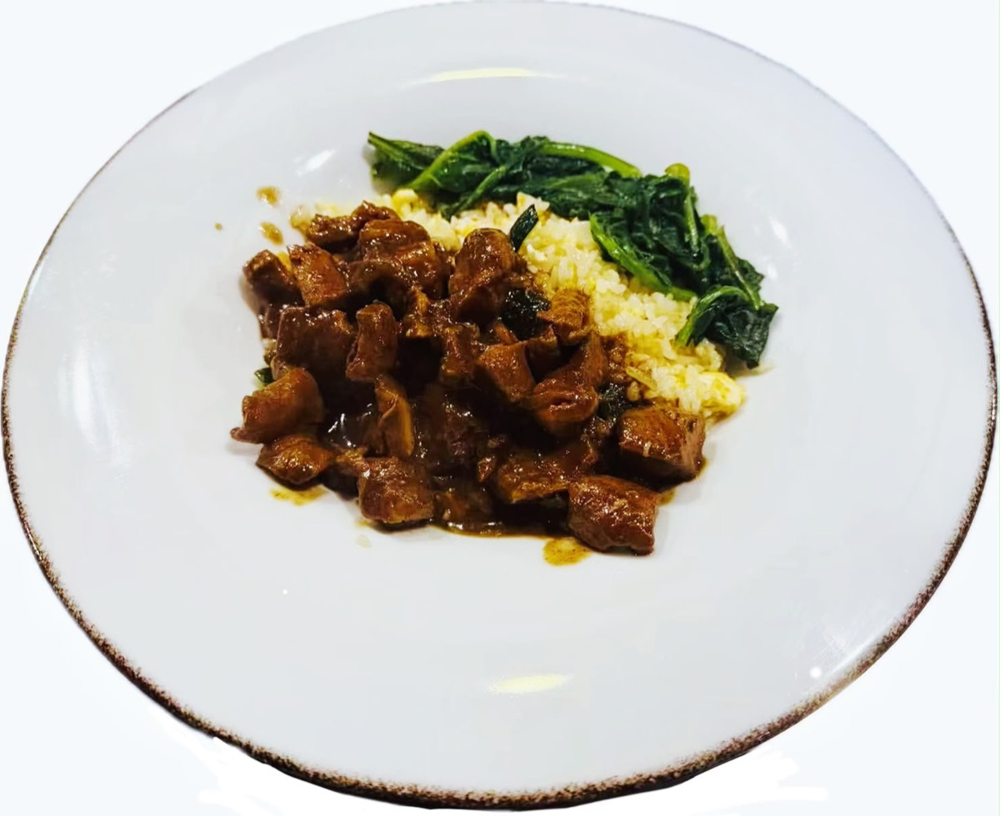
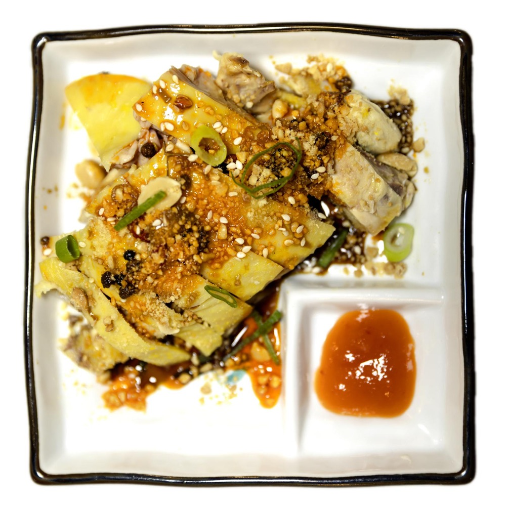
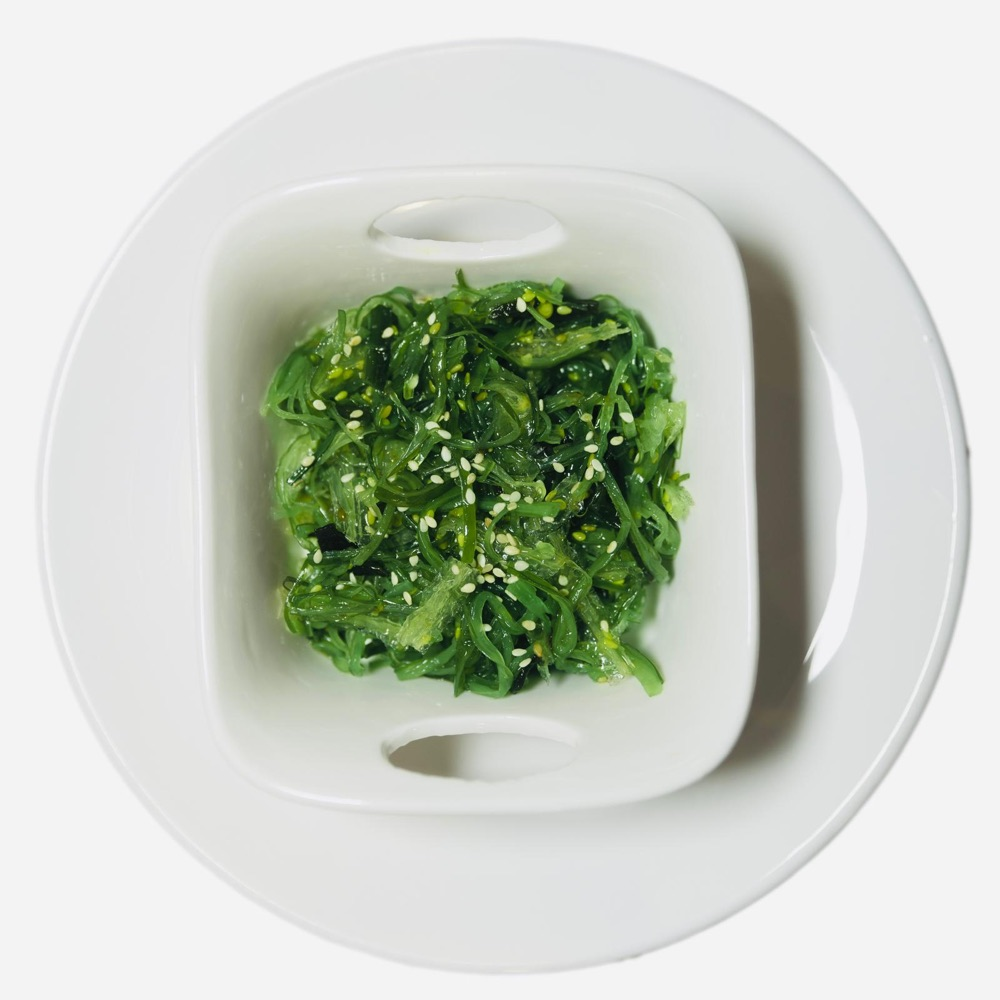
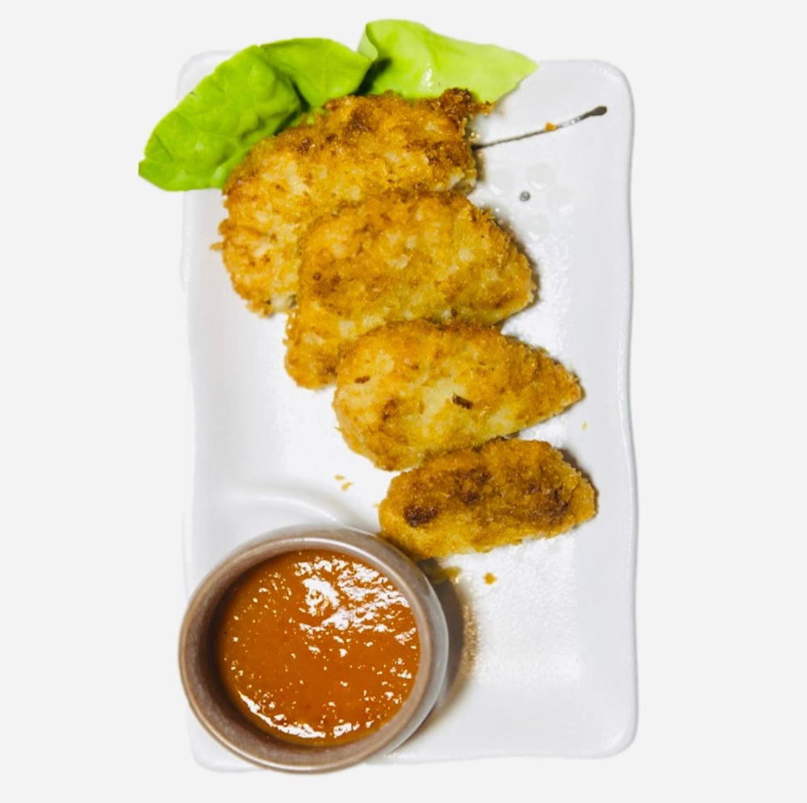
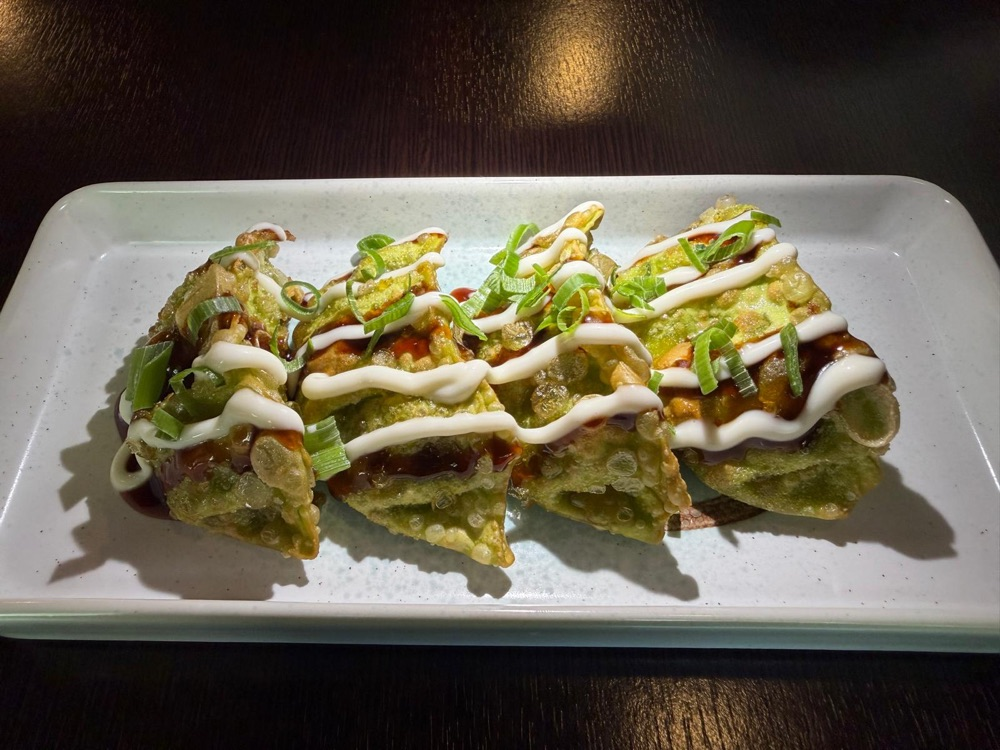
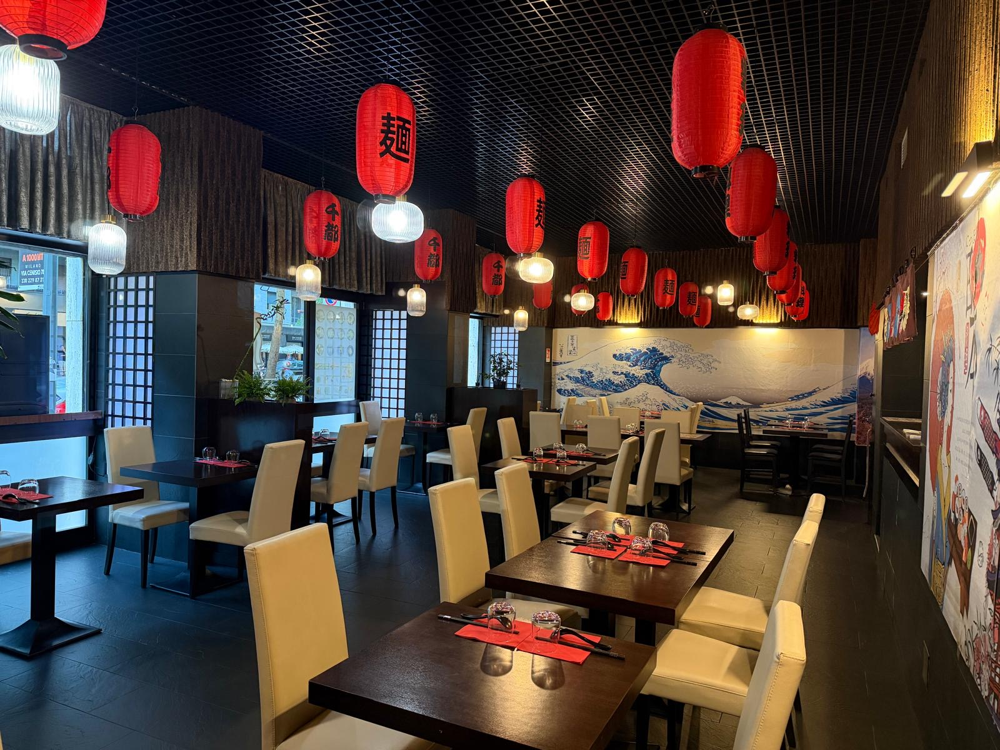
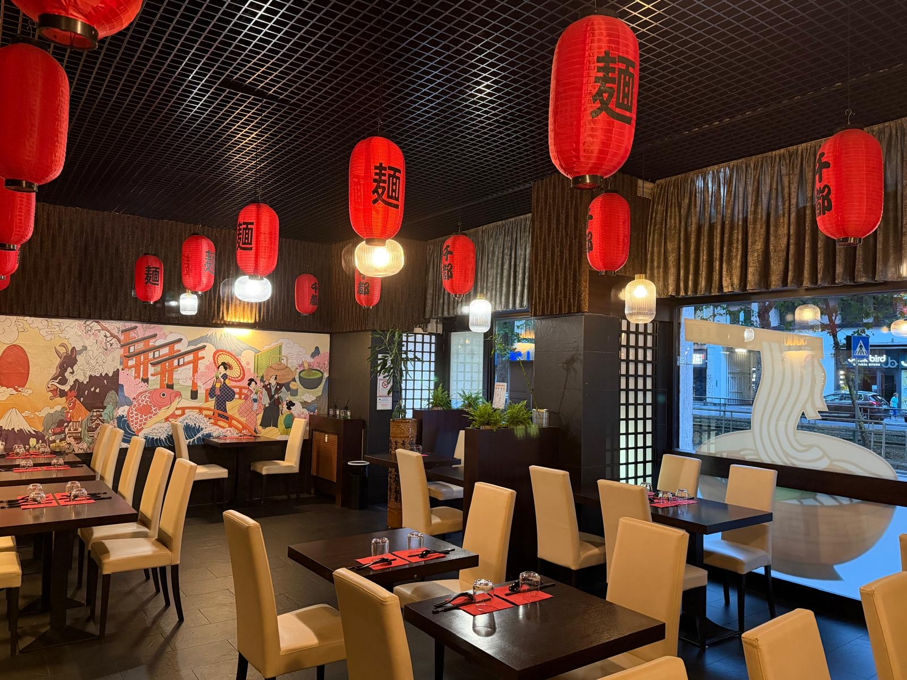

12€
12€
Ramen Tonkatsu
Ramen in brodo con cotoletta di maiale fritto, uovo marinato, naruto, verdura, alga nori, funghi, mais e sesamo.
Brodo che sobbolle da ore, noodles al dente, chashu che si scioglie in bocca. Un pezzo di Giappone in Via Cenisio, per chi il ramen lo vive come una scena di manga.
 店
店
Da Sento Ramen il rito del ramen è un piccolo racconto illustrato: lanterne rosse accese, l'onda di Hokusai sul muro, il vapore che sale da ogni ciotola come in una tavola di manga. Ogni brodo — miso, soia o tantanmen — nasce da ore di cottura lenta, per un piatto che scalda e racconta una storia.
"Location artefatta che richiama una tipica locanda giapponese... uno dei ramen più buoni di Milano." — Recensione Tripadvisor
Scorri piano: ogni ciotola si svela una alla volta, come le tavole di un manga. Ecco alcuni dei piatti che trovi davvero nel nostro menu.
12€
Ramen in brodo con cotoletta di maiale fritto, uovo marinato, naruto, verdura, alga nori, funghi, mais e sesamo.

11€Ramen in brodo, fette di maiale brasato, uovo marinato, naruto, alga nori, funghi, verdura, sesamo e mais.

13€Brodo tantanmen, ramen con anatra arrosto, funghi, mais, naruto, sesamo, uovo marinato e alga nori.

11€Uno dei piatti più apprezzati del locale: riso con maiale brasato e verdura.




Pollo con salsa piccante, insalata di alghe, pollo fritto e ravioli fritti: gli antipasti più ordinati dai nostri clienti.
 Dolce
Dolce
Il finale perfetto: morbidi mochi giapponesi in tanti gusti, dal matcha al cocco.

Lanterne rosse, l'onda di Hokusai, legno scuro: un piccolo pezzo di Giappone a due passi da Via Cenisio.

La Sala Principale
Lanterne e Atmosfera"Location artefatta che richiama una tipica locanda giapponese. Uno dei ramen più buoni di Milano. Personale gentilissimo."
"Menù non vastissimo, ma piatti ben preparati: il ramen, in diverse varianti, buono. Ottimo il servizio, prezzo giusto."
"Ho cenato da Sento Ramen e l'esperienza è stata fantastica. Il vero punto di forza è la personalizzazione del brodo, ricco e saporito."
Ci trovi in Via Cenisio 13, a Milano.
| Lunedì | Chiuso |
| Martedì | 12:00–15:00 / 19:00–23:00 |
| Mercoledì | 12:00–15:00 / 19:00–23:00 |
| Giovedì | 12:00–15:00 / 19:00–23:00 |
| Venerdì | 12:00–15:00 / 19:00–23:00 |
| Sabato | 12:00–15:00 / 19:00–23:00 |
| Domenica | 12:00–15:00 / 19:00–23:00 |
Scrivici su WhatsApp e prenota in un attimo. Ti aspettiamo per la tua prossima ciotola di ramen.
Prenota su WhatsAppIl nostro ramen anche a casa tua: ordina su Deliveroo o Glovo.